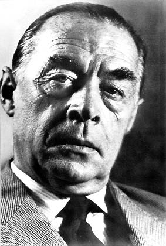

ÊRÍC MARIA RƠMÁC sinh ngày 22 tháng 6 năm 1898 tại Ôxnabruc, xứ Hanôvrơ, Tây bắc nước Đức, giáp giới với Hà Lan, thuộc một gia đình gốc Pháp di cư sang Westphalie sau cuộc Cách mạng tư sản Pháp 1789. Cha làm nghề đóng sách và theo đạo Thiên Chúa. Ông học trung học tại trường địa phương và năm 16 tuổi đã bị động viên đi quân dịch. Trong chiến tranh thế giới lần thứ nhất, ông bị thương tới 5 lần, lần sau cùng, khá nặng. Sau khi chiến tranh kết thúc, nước Đức bị thua trận với 2 triệu người chết và 4 triệu người bị tàn phế, Rơmác trở về làm nghề dạy học, đi buôn, làm tài xế lái thử xe cho một hãng làm vỏ ruột xe hơi tại thủ đô Beclin. Trong vòng 10 năm, ông bắt đầu viết báo, viết văn vào buổi tối, thoạt tiên gởi bài cho một tạp chí xe hơi Thụy Sĩ và trở thành phụ tá chủ bút của một tờ báo bằng tranh chuyên về thể thao.

Cuốn tiểu thuyết đầu tay của ông Phía Tây không có gì lạ viết trong năm 1929, năm ông 31 tuổi, sau khi bị 5, 6 nhà xuất bản ở Beclin từ chối, được dư luận văn học coi là cuốn tiểu thuyết Đức hay nhất nói về cuộc chiến tranh 1914-1918, và có nhà phê bình văn học đã gọi nó là “một trong những cuốn sách thành công nhất của thế kỷ”. Ngay trong năm đầu, riêng tại Đức, số sách bán đã lên tới 1.200.000 cuốn; đến nay đã được phát hành tới 8 triệu cuốn, được dịch ra nhiều thứ tiếng, được quay thành phim. Sự thành công mau chóng đó đã đem lại tiền tài danh vọng và nhiều mối đe dọa mới cho Rơmác. Để tránh bị dòm ngó, ông sang Thụy Sĩ và ngụ tại căn nhà mà ông xây năm 1932 tại Lagơ Magiorơ.
Ngày 30 tháng 1 năm 1933, Hítle được đưa lên cầm quyền ở Đức. Ngay trong năm đó, chính quyền phát xít Đức tuyên bố rút khỏi Hội Quốc Liên, bỏ không tham gia Hội nghị thế giới về giải trừ quân bị. Hítle còn công bố ý định phục thù của người Đức, chính thức tổ chức Quân đội Quốc xã, tăng cường sản xuất vũ khí mới, chuẩn bị chiến tranh đồng thời, dưới chiêu bài chống Cộng, y ra sức đàn áp, bắt bớ các lực lượng cách mạng, các phần tử tiến bộ ở trong nước, đã đấu tranh với chủ nghĩa phát xít ngay khi nó mới ra đời. Những sự kiện đó diễn ra làm Rơmác không có cơ hội trở về Đức nữa. Những tác phẩm của ông bị phát xít Đức đốt năm 1933 cùng các tác phẩm của các nhà văn tiến bộ khác như Bectôn Brêts, Tômax Mann, Anna Dêgơơc…, tên ông bị ghi vào sổ đen cùng với các nhà văn, nhà hoạt động nghệ thuật và xã hội tiến bộ khác. Ông không ở trên đất Đức nhưng vẫn bị chính quyền Đức xã truy nã. Năm 1938, chúng tước bỏ quốc tịch Đức của ông.
Sau khi thôn tính xong các nước Áo, Tiệp Khắc rồi xâm lấn Ba Lan năm 1939, thực hiện phần thứ nhất tham vọng làm bá chủ châu Âu và thế giới của hắn, Hítle đã mở đầu cuộc chiến tranh thế giới lần thứ hai. Quân đội Quốc xã giày xéo châu Âu và năm 1939, Rơmác lại phải di cư một lần nữa sang Mỹ, ở Lốt Ăngiơlét.
Năm 1946, ở Mỹ, ông đã viết cuốn tiểu thuyết Khải hoàn môn nói về cuộc phiêu lưu của một người Đức di cư sang Pari, trong những năm 1938-1939. Đây cũng là một thành công lớn thứ hai của ông, đã có nhiều tiếng vang rộng rãi trên khắp thế giới.
Trong vòng 10 năm, Rơmác bắt đầu viết để trình bày quá khứ mới mẻ và đen tối của dân tộc Đức trong những cuốn tiểu thuyết Tin lửa sống (1952) nói về một câu chuyện xảy ra trong một trại tập trung của Hítle, Thời gian để sống và thời gian để chết (1954) và vở kịch. Vị trí cuối cùng (1956). Những tác phẩm này đã được dư luận thế giới, đặc biệt là Liên Xô và các nước xã hội chủ nghĩa, rất khen ngợi, được dịch ra nhiều thứ tiếng, vở kịch đã được diễn đi diễn lại nhiều lần.
Những tác phẩm khác của ông được dư luận thế giới đánh giá cao là những cuốn tiểu thuyết: Con đường về (1931), mô tả đời sống khổ cực về tinh thần và vật chất của các cựu chiến binh Đức sau chiến tranh; Ba người bạn (1938) nói về mối tình gắn bó của các cựu chiến binh Đức sau khi giải ngũ, Hãy yêu những kẻ hậu sinh (1940). Rơmácmất năm 1970 ở Thụy Sĩ, thọ 72 tuổi.
Êríc Maria Rơmác là một nhà văn lớn chỉ chuyên viết về một đề tài: chống chiến tranh đế quốc, chống cường quyền phát xít. Ông viết về chiến tranh để chống chiến tranh vì chỉ trong những giờ phút sống mái quyết liệt nhất đó, tính nhân đạo hay man rợ, lòng yêu nhân loại, yêu nước chân chính hay những bản năng tự nhiên của loài thú mới hiện nguyên hình, rõ rệt và chính xác ở từng người.
Lòng căm ghét chiến tranh xâm lược và những kẻ gây ra nó thể hiện lên từng trang, từng dòng trong toàn bộ tác phẩm của Rơmác. Mỗi câu chuyện của ông là một bức tranh vẽ lên thảm trạng chiến tranh với những cảnh tàn phá về tâm hồn và thể xác, cảnh sống đọa đày, mòn mỏi, bế tắc. Mỗi tác phẩm của ông là một bản cáo trạng đối với cái xã hội vẫn xưng là tự do nhưng luôn kêu gài chuẩn bị những lò sát sinh mới, mỗi tác phẩm đó còn chứa đựng một lòng nhân đạo cao cả, một mối tình thương xót sâu xa đối với con người, nạn nhân của đế quốc và phát xít.
Ngay từ tác phẩm đầu tiên Phía Tây không có gì lạ, Rơmác đã vừa lên án cuộc chiến tranh thứ nhất, vừa đánh tiếng chuông báo trước cái tai họa “nâu” mới lăm le bước lên vũ đài chính trị đã sớm hò hét phục thù: tiếp theo đó, ông đã nói rõ cái gia tài đau thương và mai mỉa mà chiến tranh đã dành cho các cựu chiến binh Đức, từ sĩ quan đến binh lính, trong các cuốn Con đường về, Ba người bạn.Càng về sau thì những cuốn tiểu thuyết khác của ông như Khải hoàn môn, Thời gian đế sống và thời gian để chết, vở kịch Vị trí cuối cùng v.v… đều là những đòn mạnh đánh thẳng vào chủ nghĩa phát xít, thủ phạm chính của các tai họa ghê gớm giáng xuống nước Đức và cả châu Âu sau này.
Rơmác đã lấy đề tài ngay trong tình hình thời sự chính trị nên các tác phẩm của ông không phải chỉ là những sáng tác văn học bất hủ mà còn như nóng hổi hơi thở của thời đại, có sức nhắc nhở người đọc hãy tĩnh táo: bọn tội phạm chiến tranh còn đó, chúng vẫn sống tự do, vẫn cầm quyền, vẫn âm mưu gây ra một cuộc chiến tranh mới.
Rơmác không lên án chiến tranh một cách ồn ào. Lần đầu tiên, dùng ngòi bút để đả kích cái tai họa mà nhân loại đã phải chịu đựng hàng bao thế kỷ, ông đã viết là ông không đóng vai quan tòa, không đứng trên cương bị một nhà chính trị để kết tội chiến tranh, ông chỉ “thử nói về một thế hệ bị chiến tranh hủy hoại, ngay cả khi thế hệ ấy đã thoát khỏi những viên đại bác”.
Các nhân vật của Rơmác, những thanh niên Đức mới 20 tuổi, yêu đời, nhưng bị choáng váng bởi viên đạn đại bác đầu tiên làm tổn thương trái tim họ, hầu hết chỉ cảm thấy bất lực một cách chua chát và có lúc còn hoảng hốt trước cơn gió lốc đó. Họ thấy được cảnh thối nát của xã hội đang phải sống, họ thấy được tính chất man rợ và vô lý của những cuộc chém giết, họ có nhiều tình cảm trong lòng và biết thương yêu những người bình thường, không phân biệt chủng tộc và màu da, nhưng họ đã nhồi sọ khá nhiều: sách báo, đài phát thanh, vô tuyến truyền hình, điện ảnh, sân khấu, nhà thờ, các phương tiện tuyên truyền khoa học nhất đều ở trong tay các tên đầu sỏ của chủ nghĩa vị chủng và chủ nghĩa phục thù, ngày đêm không ngớt reo rắc cái tâm lý hoài nghi, thất bại vào các phong trào nhân dân đấu tranh đòi hòa bình, hạnh phúc, reo rắc mối căm thù, sợ hãi đối với các nước xã hội chủ nghĩa. Những nhân vật của Rơmác không thể nào sống nổi trong cảnh bế tắc của xã hội nhưng không tìm ra được lối thoát. Họ chỉ biết phản kháng bằng thái độ châm biếm và bất phục tùng hàng ngày; trước những giờ phút quyết liệt nhất cũng vẫn chỉ là những thái độ cá nhân tiêu cực hay liều lĩnh.
Cho nên cũng dễ hiểu vì sao cuộc đời đại đa số nhân vật trong truyện của Rơmác đều kết thúc một cách đau đớn, xót xa. Xét cho cùng thì đó chỉ là kết quả tất nhiên của các thế hệ “thanh niên phẫn nộ” muốn đập tan cái trật tự của xã hội tư bản nhưng không có lý tưởng và mục đích rõ rệt, không được ánh sáng của thứ chân lý khoa học nhất của loài người là chủ nghĩa xã hội soi đường, chỉ lối và làm tăng thêm sức mạnh. Đối với những con người đầy nhiệt tình, đáng được hưởng hạnh phúc nhưng lại phải đương đầu với kẻ địch mạnh, đông, nham hiểm hơn, cuộc đấu tranh không cân xứng ấy tất nhiên dẫn họ đến chỗ nguy hiểm và thất bại.
Tuy vậy Rơmác không hề tuyệt vọng. Các nhân vật của ông vẫn tin tưởng ở thời gian, ở cuộc sống, họ vẫn tiếp tục đấu tranh và suy tư trong hoàn cảnh gian khổ.
Càng về sau, các nhân vật cách mạng càng xuất hiện nhiều hơn, nhất là trong những tác phẩm ở thời kỳ cuối, nhưng do cách nhìn còn hạn chế của ông nên những nhân vật đó còn mờ nhạt và chưa gây được ảnh hưởng đến mọi người chung quanh.
Mặc dầu bị giới hạn như vậy, nhưng các tác phẩm của Rơmácvẫn cứ làm say mê người đọc, vẫn có nhiều tác dụng, đặc biệt ở thế giới tư bản bên kia: vì Rơmác sống trong ao tù của cái xã hội đó mà vẫn giữ vững tiếp tục truyền thống tiến bộ và nhân đạo của chủ nghĩa hiện thực phê phán. Ông chưa tìm ra được giải pháp cách mạng như cũng vạch ra được con đường đúng đắn, lương thiện để hướng đến chân lý, đấu tranh cho hòa bình, hạnh phúc con người.
THỜI GIAN ĐỂ SỐNG VÀ THỜI GIAN ĐỂ CHẾT là một tác phẩm đã có tiếng vang mạnh mẽ trong văn học thế giới. Nói về tác phẩm này, một nhà phê bình đã viết: Rơmác đã đạt được một thắng lợi “kép” hiếm có: Phía Tây không có gì lạ là cuốn tiểu thuyết Đức hay nhất về cuộc chiến tranh 1914-1918, và đây là cuốn tiểu thuyết Đức hay nhất nói về cuộc chiến tranh 1939-1945.
Thời gian để sống và thời gian để chết chỉ là câu chuyện đau thương, bi thảm trình bày tâm trạng hoang mang của một người lính Đức trẻ, kể từ lúc anh ta hiểu được rằng anh và cả dân tộc anh đã bị lừa bịp và phải cầm súng hy sinh chỉ vì những cuồng vọng của bọn cầm quyền phát xít hiếu chiến, và cuộc chiến đấu mà anh còn phải đeo đuổi đã thất bại từ lâu rồi. Đó cũng là tâm trạng chung của những người dân Đức bình thường, đã phải chịu đựng tất cả gánh nặng của chiến tranh, phải chịu đựng tất cả những hình phạt cực nhục thay cho bọn cầm quyền tội lỗi. Cuốn tiểu thuyết còn là hình ảnh của nước Đức trong những ngày cuối của cuộc chiến tranh thế giới lần thứ hai đúng lúc Quân đội Quốc xã bắt đầu phải tháo lui trước sự phản công mãnh liệt của Hồng quân Liên Xô.
Từ trang đầu đến dòng cuối của cuốn truyện Rơmác đã lấy cuộc tàn sát nhân loại thảm khốc nhất từ trước đến nay trong lịch sử làm nước Đức bị tàn phá đến kiệt quệ, với 6 triệu 600 ngàn người chết, để làm chủ đề của tác phẩm.
Câu chuyện bắt đầu từ ở mặt trận Nga. Nhưng nhân vật chính trong chuyện, người lính Đức trẻ, Ernest Gơrebê thì có một quá trình chinh chiến trong quân đội Quốc xã khá dài về trước. Anh ta đã qua Pháp, Hà Lan, sang châu Phi, những đất đai mà phát xít Đức mới chinh phục được. Đối với anh ta, cho đến lúc đó chiến tranh chỉ là “những cuộc dạo chơi trên những đất nước đang hoang mang và còn nguyên vẹn”. Anh ta không hề bận tâm đến những lý do đã thúc đẩy anh và các bạn đồng đội đi bắn giết những người dân vô tội ở những nước đó; anh ta thấy “mọi việc như đã được sắp đặt đâu vào đây”; anh ta tin vào những cái loa tuyên truyền đã nói rằng: “Nước Đức bị những kẻ thù tàn bạo tần công, đã chống cự lại”. Anh thấy việc “đối phương tuyệt không chuẩn bị chiến tranh cũng không có gì là trái ngược”.
Nhưng Ernest Gơrebê đã bị điều sang mặt trận Nga. Mãi đến lúc đó, mắt anh mới mở to, và anh ta mới biết đến “giờ của nước Nga” lúc đó anh ta mới thấy cảnh hàng sư đoàn Đức hỗn độn rút lui, hàng quân đoàn nguyên vẹn bị bao vây và bắt làm tù binh và đến lúc đó anh ta mới suy nghĩ.
Nhưng anh lại muốn được yên ổn để về phép thăm gia đình, anh còn hy vọng tìm ra một sự thật ở hậu phương nước Đức khác với sự thật quá phũ phàng ở mặt trận.
Suốt trên đường về, anh lại chỉ thấy những cảnh tàn phá thê lương như ở mặt trận, cộng thêm những mối lo âm ỉ, những đe dọa thầm kín, riêng biệt của hậu phương. Gia đình anh đã tan nát, bố mẹ anh không biết còn sống, đã chết hay mất tích ở đâu mà không thấy để lại một dấu vết gì. Trong cái thành phố quê hương của anh, tiếp xúc với bất cứ người dân nào, anh chỉ thấy “sợ hãi, oán hờn và dối trá” dưới những hình thức khác nhau. Những cảnh sống trái ngược của các hạng người ở hậu phương đã làm anh thấy rõ thêm bộ mặt của chế độ phát xít.
Trước sự thật tàn nhẫn ấy, người thanh niên Đức thẳng thắn, sôi nổi, nhưng còn non nớt trước cuộc đời lại càng hoang mang và thất vọng. Để trả thù chế độ, để bù đắp cho tâm hồn và tình cảm bị tổn thương nặng nề, anh đã dùng tình yêu làm phương thuốc trị độc.
Con đường mà anh ta tưởng là một lối thoát, thật ra lại là một ngõ cụt. Trong cảnh địa ngục mà anh còn phải sống, niềm an ủi và hạnh phúc mới lại là nguyên nhân của những đau khổ mới.
Cuối cùng thì Ernest Gơrebê lại quay ra mặt trận và phải bỏ mình ngoài đó mà không đạt tới một ước mơ, nguyện vọng của mình, trong hoàn cảnh thật éo le đặc biệt mà Rơmác đã tạo ra có lẽ với mục đích tô đậm thêm số phận chua chát của người lính trẻ, nạn nhân của một chế độ tàn bạo nhưng hoàn cảnh ấy chưa thể hiện rõ rệt ranh giới của cuộc chiến tranh chính nghĩa và phi chính nghĩa.
Câu chuyện đơn giản và thương tâm của người lính Đức trẻ, một mình mò mẫm đi tìm chân lý và một nguồn an ủi chính là một trong số hàng tấn bi kịch của nhân dân Đức trong những năm chiến tranh đen tối.
Thời gian để sống và thời gian để chết phản ánh một sự thật đau xót, lên án một chế độ lỗi thời và chứng minh rằng, bất cứ một xã hội nào dựa trên cường quyền, gian ác và giả dối để thống trị sẽ bị diệt vong và qua đó tác phẩm đã nâng cao lòng tin vào thằng lợi cuối cùng của cuộc đấu tranh cho chân lý, cho hòa bình, hạnh phúc của nhân loại.
LÊ PHÁT
Một bản dich khác: